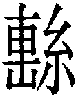

姤卦 天風姤
姤卦 天風姤
姤，女壯，勿用取女。初六，繫于金柅，貞吉。有攸往，見凶。羸豕孚蹢躅。九二，包有魚，无咎，不利賓。九三，臀无膚，其行次且，厲，无大咎。九四，包无魚，起凶。九五，以杞包瓜，含章，有隕自天。上九，姤其角，吝，无咎。
【卦名】
今本：姤 古文作遘 帛書：狗 帛書易傳：坸/句 清華簡：毄（繫） 上博簡：敂 海昏簡：笱
姤與遘
姤卦卦名應當作「遘」，為偶遇的意思。在許多古書中也會作遘，《釋文》言姤卦：「古文作遘。」甲金文有遘無姤，因此卦名應以遘為正，姤假借為遘。
《彖傳》：「姤，遇也。」《序卦》：「姤者遇也。」《說文》：「姤，偶也。」「遘，遇也。」《爾雅．釋詁》：「遘，逢，遇也。」這都是卦名為遘，卦義為遘遇的例證。
遘是非常古老的一個字，在殷墟卜辭中非常常見，並解釋為遇，如遘雨、不遘雨、遘大雨、遘大風。另外在祭祀場合也常使用遘字表示遇到祖先，意思可能是祖先已經來享用祭品。如「其遘上甲」、「上甲王其遘」，或者遘祖乙、遘祖辛、遘于妣丙......。
對比之下，《周易》經文言遇不言遘（婚媾是另一義，並非遇的意思），小過卦中更有「過其祖，遇其妣」。由於遘常見於殷商卜辭，一直到西周的金文。遇字則到西周末才出現，東周才較常見，因此從《周易》的遘遇兩字的用字習慣來看，恐怕其書寫年代大略在東周時期。
遘與冓
遘的本字為冓，是由冓字增繁演化而來。
冓為遘遇之義，後來又演生出從止、從ㄔ，從辶的不同字，除了作為遘遇之義外，金文中有「婚遘」一辭，即《周易》的「婚媾」。因此，冓、遘也有婚媾、媾合、交媾之義。冓的其他衍生字還有搆、溝、構、覯，都帶有交會的意味。
冓小篆作 ，《說文》將其與遘別為一義：「冓，交積材也，象對交之形。」其甲骨文則作 ，李孝定認為，這畫的是兩條魚相遇，即遘遇的本字。至於許慎交積材之說是以篆體而言，並非原義。冓又衍生出婚媾字，也是從遘遇義引申而來。
徐中舒也說：「象兩魚相遇之形，以會遘遇之義。或增止、ㄔ、辵等為形符，以明與行義有關。《說文》：『冓，交積材也，象對交之形。』不確。」
由此可見，姤卦不盡然只有傳統註解的遘遇之義，可能還兼有婚媾（或交媾）的意思。因此卦辭直接談娶女不娶女的問題。更有趣的是，冓的甲骨文由兩條魚相遇所構成，而經文中的確出現了兩條魚：九二包有魚，九四包无魚。魚於象為陰，即初六。九二包有魚，即與初六遘遇或交媾者。而九四之包無魚，則是無以和初六遘遇者。
宋朝馮椅：「古文姤作遘，遇也，亦婚媾也，以女遇男為象。王洙易改為今文為姤。」馮椅說法，古文卦名作遘是正確的，而且遘兼有遘遇和婚媾二義。但王洙將其改易為今文姤，此說不知所據。王洙為北宋時人，著有《易傳》十卷，但鄭玄及石經也是作姤，因此可能在漢末時就已是如此。
魚在上古中國文化中，可能帶有性愛之象徵，仰紹文化中有魚紋盆，許多學者認為，這是女性生殖器的崇拜。
甲骨文畫兩魚相遇，或許就有魚水之歡的意思，所以又取義為婚媾、交媾。
再如，《詩經．敝笱》描繪文姜的淫亂，就以魚為喻：
敝笱在梁，其魚魴鰥。齊子歸止，其從如雲。
敝笱在梁，其魚魴鱮。齊子歸止，其從如雨。
敝笱在梁，其魚唯唯。齊子歸止，其從如水。
壞掉的魚簍在河壩上，這裡有魴鰥等大魚。齊國的女兒嫁人了，她的隨從多如雲。壞掉的魚簍在河壩上，這裡有魴鱮等大魚。齊國的女兒嫁人了，她的隨從多如雨。壞掉的魚簍在河壩上，這裡的魚前後相隨。齊國的女兒嫁人了，她的隨從多如水。
笱是魚簍，敝為破舊、壞掉了。魚簍壞了，關不住大魚，在暗喻無法閑防文姜的淫亂。「其從如雲」、「其從如雨」這個藏尾詩用「雲雨」在暗示男女之交媾。乾卦《彖傳》「雲行雨施」可能也有類似的引喻。
而〈衡門〉也以魚來比喻齊國和宋國女子：
豈其食魚，必河之魴 。 豈其取妻，必齊之姜。
豈其食魚，必河之鯉 。 豈其取妻，必宋之子。
此詩意思為：吃魚就要吃河裡的魴魚，娶妻就要娶來自齊國的姜姓女子。吃魚就要吃河裡的鯉魚，娶妻就要娶來自宋國的子姓女子。
句與繫
帛書《周易》卦名作「狗」，帛書易傳作「坸」、「句」。海昏簡作「笱」，上博簡「敂」，應該都是取「句」（勾）聲，並假藉為遘。
清華簡作， 為繫的異體字，音與茍同。就卦象來看，巽為繩，因此卦象有繫義。初六說「繫於金柅」，因此以繫為卦名亦相當有可能。類似的情況，豫卦清華簡作「介」，豫卦六二「介于石」。
【卦義】
偶遇，邂逅，女人主事。
姤卦所謂的「遇」指的是一陰遇五陽，象徵一女遇五男。由於女子強悍而不貞，因此這種男女關係只能當作一時的邂遘，不能想天長地久。所以《彖傳》說：「姤，遇也，柔遇剛也。勿用取女，不可與長也。」
姤卦又有女子主事之象。就卦氣來看，三月夬卦五陽處決一陰，陰氣將盡，四月為乾卦純陽，五月姤卦陰氣歸來，一陰在五陽之始，順承五陽。由於卦氣的成長是由內向外，巽風在內為陰氣向陽氣侵蝕的力量，因此陰氣雖然只有一爻，但其對於陽氣的入侵性與破壞力，卻是有如破竹，因此稱「女壯」。
姤在消息卦中為陽長之卦，與復卦都代表著陰陽消長的一個轉折點，也是善惡質變的開端。
復是陽氣歸來，喻人改過遷善，生機藏地中，元氣歸來。姤卦則相反，是陰氣歸來，邪惡已經在暗中入侵，象徵在人所看不到的暗處已開始產生腐化，陰氣藏於天下。因此如何明察秋毫，防微杜漸，對姤卦來說是相當重要的。
為何陽氣要到臨卦才開始用事，三陽歸來才成泰？而陰氣從姤卦一陰歸來就開始用事？因為陽氣象徵的是善，是積極、建設，正向的力量。善是要持續的，而成就事業則需要累積。而陰象徵的是惡，是消極，是破壞力，人之墮落，是瞬間的，破壞又是很快速的。
卦象上乾天，下巽風，為天下有風，風行天下，君王誥命天下之象。所以《象》曰：「后以施命誥四方。」后同司，君王的意思。
卦序上姤卦與夬卦為相綜的一對卦，並繼夬卦而來。《序卦》曰：「決必有遇，故受之以姤。姤者，遇也。」夬卦是五陽與一陰畫清界限並處決一陰，或者是君子訣別之義。姤卦則是一陰重新又與五陽相遇，或者訣別之後又會合，所謂分久必合也。
姤卦若筮問感情，則只是短暫的邂遘，無法長久，原因可能為女方過於強勢或同時有多人交往。若問其他諸事，則可能是由女人發號施令。故姤卦對於女子事業是大吉之卦，也是屬於女強人的一卦。
姤卦為陰氣增長，不利有攸往之卦。初六為主爻，也是陰氣歸來遇陽之爻，不宜再增長，故曰有攸往見凶。 並繫以金柅，固結之使不得往。
陰為魚，初六即九二、九四所遇之魚。初六承九二，為九二所包覆，故包有魚。九四雖應初六，但遠之，故包無魚。魚象徵民，故九二曰不利賓。九四曰起凶（征凶），《象傳》說「遠民也」，不得民，所以不利出征。九三為巽卦之極，其對應的爻為上九之角，曰「臀无膚，其行次且，厲，无大咎」。上九則曰姤其角，如晉卦上九之晉其角。
九五處剛健之體而具中正之德，有含章之美。雖是治卦之主，但與成卦主爻初六卻遙不相遇，亦無上下對應關係。故卦辭曰勿用取女。但五有制陰之責，故曰以杞包瓜。
姤，女壯，勿用取女。
- 《彖》曰：姤，遇也，柔遇剛也。勿用取女，不可與長也。天地相遇，品物咸章也；剛遇中正，天下大行也，姤之時義大矣哉。
- 《象》曰：天下有風，姤，后以施命誥四方。
- 易之義：坸之卦，足而知余。
邂遘偶遇，女人強悍，不能娶女。
或讀作「姤女壯，勿用娶女」，卦名與女壯連讀。
《彖傳》說：「勿用取女，不可與長也。」因為這只是一場短暫的邂遘偶遇，無法天長地久，所以這個女人不能娶。
姤卦一陰承五陽，一女應付五男，過於厲害。這也是柔順力量的極致。
孔穎達：姤，遇也。此卦一柔而遇五剛，故名為姤。施之於人，則是一女而遇五男，淫壯至甚，故戒之曰「此女壯甚，勿用取此女」也。
【字義】
女壯：有二種解釋，一、通解為女子壯盛或強壯，但又將其演繹為女子淫亂，如孔穎達：「一女而遇五男，淫壯至甚。」朱熹：「女德不貞而壯之甚也。」二、壯通戕，女戕為女傷。虞翻以壯為傷：「女壯，傷也。陰傷陽，柔消剛，故女壯也。」大壯卦馬融曰：「壯，傷也。」
誥：告也。《釋文》：「鄭作詰，止也，王肅同。」按：詰，音結，責問也。引申亦有禁止、治理之義。
初六，繫于金柅，貞吉。有攸往，見凶，羸豕孚蹢躅。
《象》曰：繫于金柅，柔道牽也。
豬被綁在金屬做的阻柅器上，貞定守正為吉。若是有所往，那麼為凶，就如被綁起來的豬只能原地浮躁地亂跳。
繫，象徵女子之纏綿。柅，象徵男子。金柅，喻剛健的男子，指包有魚之九二。貞吉，女子繫於剛堅之男子，從正則吉。若女子三心兩意，想前往與遠處的九四相見，則凶。羸豕孚蹢躅，喻指「有攸往見凶」者的處境。
王弼以初六繫於九四，因九四為「正應」。此看法不如《九家易》。《九家易》以初六繫於九二，而「有攸往見凶」指的是初六若想前往應四則凶。按：巽為繩，九二為包有魚，故初六繫於九二，為九二所包。九四在外，為「包無魚，起凶」之爻，對應初六的「有攸往見凶」。
遯卦也有類似的卦象取經文，遯假借為豚，九三「係遯」即「繫豚」，六二「執之用黃牛之革，莫之勝說」所執也是豚。
《九家易》：絲繫於柅，猶女繫於男，故以喻初宜繫二也。若能專心順二，則吉，故曰貞吉。今既為二所據，不可往應四，往則有凶，故曰「有攸往見凶也」。
虞翻：柅，謂二也。巽為繩。故繫柅。乾為金，巽木入金，柅之象也。
王弼：金者堅剛之物，柅者制動之主，謂九四也。初六處遇之始，以一柔而承五剛，體夫躁質，得遇而通，散而无主，自縱者也。柔之為物，不可以不牽。臣妾之道，不可以不貞，故必繫于正應，乃得貞吉也。若不牽于一，而有攸往行，則唯凶是見矣。羸豕，謂牝豕也。群豕之中，豭強而牝弱，故謂之羸豕也。孚，猶務躁也。夫陰質而躁恣者，羸豕特甚焉，言以不貞之陰，失其所牽，其為淫醜，若羸豕之孚務蹢躅也。
程頤：柅，止車之物，金為之，堅強之至也。止之以金柅，而又繫之，止之固也。固止使不得進，則陽剛貞正之道吉也。使之進往，則漸盛而害於陽，是見凶也。羸豕孚蹢躅，聖人重為之戒，言陰雖甚微，不可忽也。豕，陰躁之物，故以為況。羸弱之豕，雖未能強猛，然其中心在乎蹢躅。蹢躅，跳躑也。陰微而在下，可謂羸矣，然其中心常在乎消陽也。
【字義】
柅：音你，有二義：一、阻止車子前進的阻車器。馬融：「柅者在車之下，所以止輪令不動者也。」柅字由尼字增繁而來，尼字《說文》解釋為近，為親昵之義。《爾雅》：「尼，定，曷，遏，止也。」尼為止，如《孟子》：「行或使之，止或尼之。」《墨子》：「當路尼眾。」尼為止，則柅為止木，為阻止車子移動的器具。二、柅為檷，紡織收絲用的架子，繫於金柅是把絲線收拾在金屬製的檷架上。王肅：「柅，織績之物，婦人所用。」《說文》：「柅，木也，實如梨。」段玉裁注：「今字以為檷字。」依段注，柅或作檷。《說文》：「檷，絡絲柎。从木爾聲，讀若柅。」段玉裁：「絡絲柎者、若今絡絲架子。姤初六繫於金柅，《九家易》曰：絲繫於柅，猶女繫於男。故以喻初宜繫二也。」《釋文》：「《說文》作檷，讀若昵，《字林》音乃米反，王肅作抳，從手，子夏作鑈，蜀才作尼。」檷的本字為爾，爾甲骨文，像絡絲架，即紡線的架子。孔穎達：「柅之為物，眾說不同。王肅之徒皆為織績之器，婦人所用。惟馬云：『柅者在車之下，所以止輪令不動者也。』王注云『柅者制動之主』蓋與馬同。」
金柅：以金屬所製，則堅固異常。繫于金柅意謂把小豬牢牢綁好，不讓它逃脫。另也可解釋為把車子停靠得很好，不宜出行。
羸豕：羸，音雷，羸弱、瘦弱。豕，豬。王弼以「羸豕」為母豬，因母豬是豬中較弱者：「羸豕，謂牝豕也。群豕之中，豭強而牝弱，故謂之羸豕也。」若以陰陽而論，初六為陰，故取義為牝。但此解仍有過度解釋之嫌。另一說以羸為纍，繩子。羸豕為用繩子把豬綁起來，或者小豬為繩子所纏繞。虞翻：「巽繩操之，故稱羸也。巽為舞，為進退，操而舞，故羸豕孚蹢躅。」宋衷：「羸，大索，所以繫豕者也。巽為股，又為進退。股而進退，則蹢躅也。」此承前「繫於金柅」而言，小豬既然被綁起來，以安靜休息為吉。若是想要離開，當然那裡都不能去，只能不安定地在原地哀叫亂跳。
孚：孚，浮，浮躁，王弼：「孚，猶務躁也。」或曰，感也，感而欲動，所以蹢躅。另註解為誠信，來知德：「孚者誠也。蹢躅者，跳躑纏緜也。言小豕相遇乎豕，即孚契蹢躅，不肯前進。」俞樾認為，孚為孚乳，引鄭玄注《禮記．月令篇》玄鳥至：「孚乳得兼鳥獸言。羸豕孚蹢躅，言拘羸之豕方孚而蹢躅也。」羸豕孚蹢躅，母豬哺乳而蹢躅。鄭注玄鳥：「燕以施生時來，巢人堂宇而孚乳，嫁娶之象也。」
蹢躅：蹢，音敵，蹄也，《詩．漸漸之石》「有豕白蹢」。躅，音竹。蹢躅，原地亂跳。程頤：「蹢躅，跳躑也。」《音義》:「蹢，一本作躑，古文作。」《釋文》:「一本作躑，古文作。躅，本亦作，古文作。」《說文》：「，住足也，从足，適省聲。或曰蹢躅。賈侍中說：足垢也。」段玉裁：「蹢躅之雙聲曡韵曰踟躕、曰跢跦、曰歭䠧、曰籌箸，俗用躊躇。」蹢、躑、躅、、似乎皆相通。蹢躅或作躑躅、躊躇，難進貌，或徘徊不前的樣子。
柔道牽：《說文》：「牽，引前也。从牛，象引牛之縻也。」牽為牽引，但有不同的引申義。一是引申為牽制，孔穎達：「陰柔之道，必須有所牽繫也。」牽繫即牽制之義，謂初六要受到九四的牽繫（牽制），如此守正才吉：「初六陰質，若繫於正，應以從於四，則貞而吉矣」，「若不牽於一，而有所行往，則惟凶是見矣。」二是牽引而進，此說以程朱為代表。程頤：「牽者，引而進也。陰始生而漸進，柔道方牽也。」朱熹：「牽，進也，以其進，故止之。」此說在強調陰氣受到牽引而漸進。就象而言，巽為繩，故牽。虞翻：「陰道柔，巽為繩，牽於二也。」
九二，包有魚，无咎，不利賓。
《象》曰：包有魚，義不及賓也。
廚房有魚，沒有罪咎，不利於拿來宴請賓客。
魚，指初六，但實際放在占筮的情境，為不變之陰，即八。二與初比應，在外包之，故曰包有魚。九四雖與初六相應，但遠之，故曰包無魚。
以占筮的情境來看，九二為姤卦第二爻變，所得筮數從第一爻至上爻分別為八九七七七七。同理，九四包為魚，其占筮所得的筮數為八七七九七七。剝卦六五「貫魚」，其筮數為八八八八六七，「貫魚」指的就是下面未變的陰爻，也就是四個八，由六所貫。在清華簡《筮法》裡，有「八為魚」，此或者是古代數字占的遺痕。類似的數字占，乾卦以筮數九為龍，詳見乾卦。
為何包有魚而「不利賓」？歷代說法相當多。根據王弼的解釋，魚是別人的，所以不能拿去宴請賓客：「擅人之物，以為己惠，義所不為，故不利賓也。」高亨則認為，不利賓是因為自己家中有魚，不應該還厚臉皮去別人家作客：「舍其庖中之味，而作它人之客，則不利矣。」陳鼓應認為，魚象徵豐饒，因此不需出仕，「賓」意指當君王之賓，即出仕。來知德認為，姤為五月夏季之卦，天氣炎熱，包藏的魚容易腐臭，因此不適於用來宴請賓客。《周禮》「春獻王鮪」賈公彥疏：「是一歲三時五取魚，唯夏不取。」姤為五月建午夏季之卦，因此不取魚，來知德看法近之。
按：易經中「包」都有中看不中用的隱喻，例如泰九二「包荒，用馮河，不遐遺，朋亡」，否九五「其亡其亡，繫于苞桑」，姤九五「以杞包瓜，含章，有隕自天」。此處言「包有魚」，亦有隱喻此魚不可用於賓之義。九四包無魚，《象傳》以「遠民」解釋，那麼魚象徵的是民，民心不與人共有，故不及賓。又姤者媾也，魚象徵女子，當然就不利賓了。
包：有二解，一是作庖，庖廚。孔穎達引為「庖有魚」，王弼「初自樂來應己之廚」亦取庖廚之義。《釋文》：「包本亦作庖......荀作胞。」二為包裹、包覆。虞翻：「巽為白茅，在中稱包。《詩》云：白茅包之。......或以包為庖廚也。」此似於大過初六「藉用白茅」以巽為白茅。包有魚為以白茅包魚。程頤：「包者，苴裹也。」「包苴之魚，豈能及賓。」三，又從包裹引申為包容，何楷：「包字與繫豕、包瓜同意......包有魚，則不視小人為異類，而直以兼容之量包之。」魚象徵小人，包有魚為君子包容小人。
九三，臀无膚，其行次且，厲无大咎。
《象》曰：其行次且，行未牽也。
屁股受傷以致於沒有皮膚，讓人坐立難安，連走路都有困難。艱苦則不會有大的罪咎。
臀是人安坐休息的重要部位，「臀無膚」喻人將坐立難安。
夬卦九四也說「臀无膚，其行次且」，與大壯九四相互呼應，談的都是公羊到處亂撞而闖禍的事。大壯九四「藩決不羸，壯于大輿之輹」，言公羊撞壞了圍籬之後開始闖禍，而夬卦九四則是描繪有人被羊頂撞傷了屁股，以致於行動不便，坐立難安。姤九三，典故或與大壯的羝羊有關。
臀无膚：屁股皮膚沒了。因為臀是人安坐休息的重要部位，此比喻人將坐立難安。
次且：趑趄，音「資居」，走路無法前進的樣子。《說文》：「趑，趑趄，行不進也。」段注：「《易》其行次且，《釋文》：次本亦作趑，或作<足次＞。馬云：卻行不前也。且本亦作趄，或作跙。馬云：語助也。王肅云：趑趄，行止之礙也。」
九四，包无魚，起凶。
《象》曰：无魚之凶，遠民也。
廚房中沒有魚，出征，凶。
魚長於水中屬陰，指初六。初六承九二，九二說包有魚，因九二近水樓台先得魚，和初六比鄰相應而相遇在先，因此九四雖然與初六內外相應，但卻無魚可得，因初六已先為九二所據。九四若以此而出征，將是大凶。《象》曰：「无魚之凶，遠民也。」因為不得民，和民心相去太遠。
【字義】
起凶：應作「征凶」。《易經》中多征凶的句子，帛書此爻作「正兇」，可為證。歷代注者皆注起為動，起凶，即動則凶，義近於征凶。
九五，以杞包瓜，含章，有隕自天。
《象》曰：九五含章，中正也。有隕自天，志不舍命也。
我怎能像是個瓠瓜，只能掛著好看而不能食用。藏著一身才華，卻突然上天降下這憂愁。
此言懷才不遇，又有壞消息，而心生憂愁。
傳統多依王弼注解釋為：有肥沃的土地，但種的是只能觀賞不能食用的匏瓜。君子擁有中庸的美德卻是藏而不露，不為人所了解，但仍不改其志。比言君子不得志，未遇明君，但仍意志堅定，不放棄理想，只有上天能夠毀滅他的意志。
王弼：杞之為物，生於肥地者也。包瓜為物，繫而不食者也。九五履得尊位，而不遇其應，得地而不食，含章而未發，不遇其應，命未流行。然處得其所，體剛居中，志不舍命，不可傾隕，故曰有隕自天也。
李光地：五為卦主，而與陰無比應，得卦勿用取女之義也。夫與陰雖無比應，而為卦主，則有制陰之任焉，故極言修德回天之道。
【字義】
杞：杞柳，大木。或說是苟杞。馬融：「杞，大木也。」鄭玄：「杞，柳也。」薛虞記：「杞，杞柳也。杞性柔韌，宜屈撓，以（似）匏瓜。」虞翻：「杞，杞柳，木名也。」《說文》：「枸杞也。」段注：「按：《釋木》、《毛傳》皆云：杞，枸檵。《禮記》鄭注亦云：芑，枸檵也。郭注《爾雅》云：今枸杞也。是則枸檵為古名。」《釋文》引張氏：「杞，苟杞也。」孔穎達《正義》引用多家說法：「先儒說杞，亦有不同。馬云：『杞，大木也。』《左傳》云：『杞梓皮革，自楚注。』則為杞梓之杞。《子夏傳》曰：『作杞匏瓜。』薛虞記云：『杞，杞柳也。杞性柔刃，宜屈橈，似匏瓜。』又為杞柳之杞。案：王氏云『生於肥地」，蓋以杞為今之枸杞也。」
以杞包瓜：有許多不同的解釋。一、依王弼，杞生長於肥美的土地，「以杞」代表有一塊很肥沃的土地。包瓜，即匏瓜。匏，音袍。一種適合觀賞不適於食用的瓜。「以杞包瓜」為得到肥美的土地而無法供養為食，藏有章美德性而無法表現於外，與世道不遇而志向未能實現。二、用杞的葉子包裹瓜。杞，一種高大的樹。瓜，美麗而在下的果實，或曰，瓜容易從內部爛掉。瓜藤爬上杞樹，長出瓜之後，被杞樹的葉子所包住。宋明儒大致皆近於此解釋。如程頤：「杞高木而葉大，處高體大而可以包物者杞也。美實之在下者瓜也。」朱熹：「瓜，陰物之在下者，甘美而善潰。杞，高大堅實之木也。五以陽剛中正主卦於上，而下防始生必潰之陰。」三、可能為「吾豈匏瓜」之誤。《論語．陽貨篇》孔子曰：「吾豈匏瓜也哉？焉能繫而不食！」「吾」和「以」字篆體有些類似，豈則與杞音同。可能歷經傳抄而讓「吾豈匏瓜」變「以杞包瓜」。「吾豈匏瓜」為孔子用以隱喻君子之才華不當淪為擺設裝飾，放著好看而不能行之於天下。後文「含章，有憂自天」則是感嘆這樣的才華，卻只能藏於內，又突然有憂慮從天而降，為君子感嘆懷才不遇。
含章：藏有美德。含，藏，藏在裡面而不表現於外。章，美，美德，美麗，喻指君子之才華。有懷才不遇之意味。坤六三：「含章可貞，或從王事，无成有終。」
有隕自天：突然來的憂慮。上博簡作「又自天」，即「有憂自天」。隕借為愪，愪為憂的意思。傳統「有隕自天」有兩種解釋。一、是孔穎達解釋王弼的注認為，君子的意志極為堅定，只有上天才能夠讓他毀滅：「蓋言惟天能隕之耳。」二、自天而下。隕，落，落下。如朱熹持此論，《本義》：「本无而倏有之象也。」《語類》：「言能回造化，則陽氣復自天而隕，復生上來，都換了這時節。」程頤則將其解讀為求賢而必得之：「猶云自天而降，言必得之也。自古人君至誠降屈，以中正之道，求天下之賢，未有不遇者也。」三、或以為有命令自天而下，即《象》曰：「天下有風，姤，后以施命誥四方。」施命誥四方，即命令自天而下。如俞琰：「章命令之美，其初含蓄不露，一旦告于四方，自上而降，則猶瓜熟蒂脫，自杞墜地。」來知德：「然含藏中正之章美，不求與民相遇，及施命誥四方，如自天而降，亦猶天下之風，無物不相遇也。」
上九，姤其角，吝，无咎。
《象》曰：姤其角，上窮吝也。
易之義：鍵之炕龍、壯之觸蕃、句之离角、鼎之折足、酆之虛盈，五繇者，剛之失也，僮而不能靜者也。川之牝馬、小蓄之密雲、句之［適］屬、漸之繩婦、肫之泣血，五繇者，陰之失也，靜而不能僮者也。
姤卦的頂點，窮途而無法有所遇，只遇到傷人的尖角。悔吝，沒有罪咎。
角會抵觸傷人。姤其角，謀事不成反而因此受傷。與上九相對應的九三言「臀無膚，其行次且」，依大壯卦所提供的故事脈絡來看，「臀無膚」而是被羝羊所傷。九三與上九似乎都有姤角之象。
《易之義》引作「离角」，帛書《周易》則作「狗亓角」。依《易之義》，姤上九有「動而不能靜」的陽剛之失，因姤在乾體剛健及姤卦之極，故有過剛之象。
《易之義》翻譯：乾卦上九的亢龍有悔，大壯卦九三的「羝羊觸藩，羸其角」，鼎卦九四鼎折足，豐卦的消息盈虛（按：豐卦《彖傳》：日中則昃，月盈則食，天地盈虛，與時消息），這五條卦爻辭，都是有陽剛之失，動而不能靜。坤卦的利牝馬之貞，小畜卦的密雲不雨，姤卦初六的羸豕孚蹢躅，漸卦九三的婦孕不育，屯卦上六的泣血漣如，這五條卦爻辭，是陰柔之失，靜而不能動。（按：漸之繩婦，即漸之孕婦。漸卦九五為婦三歲不孕，此爻為吉。因此較可能指的是九三。然而，九三、九五兩爻皆陽，怎會有陰之失？）
王弼：進之於極，无所復遇，遇角而已，故曰姤其角也。進而无遇，獨恨而已，不與物牽，故曰上窮吝也。
虞翻：乾為首，位在首上，故稱角。
【彖傳】
《彖》曰：姤，遇也，柔遇剛也。勿用取女，不可與長也。天地相遇，品物咸章也；剛遇中正，天下大行也，姤之時義大矣哉。
姤，遇也，柔遇剛也：姤卦古或作遘，為遇的意思。柔遇剛傳統以消息卦詮釋，初爻陰長，為柔返遇剛。但也可以旁通來解釋，坤四至乾初，成姤䷫與豫 ䷏，姤初即坤之六四而來。坤四至乾初成姤為柔遇剛，後文講的天地相遇。下一階段則是姤五至豫二，成鼎䷱與解 ䷧。鼎講人道，解為天道。如家人之為男女正，屯為天造草昧。鼎為「聖人亨以享上帝，而大亨以養聖賢」之卦，解卦則是雷雨作，雲行雨施之卦，《彖傳》說：「天地解而雷雨作，雷雨作而百果草木皆甲坼。」姤卦「天地相遇，品物咸章」承乾卦「品物流行」與坤卦「品物咸亨」而言，也是預告九五將行而雲行雨施。
勿用取女，不可與長也：解釋經文「勿用取女」，取通娶。不可與長，無法與此女長相廝守。
天地相遇，品物咸章也：乾初至坤四，成姤與豫。坤四至乾初為天地相遇，姤與豫將成鼎與解，解卦：「天地解而雷雨作，雷雨作而百果草木皆甲坼」，為品物咸章。坤《彖》：「含弘光大，品物咸亨。」